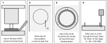

G · Legs and cabinet support
Six OLOV legs and eight feet plates go on the tops while they lie face down on a blanket; the cabinets stand by the walls; then each top is stood on its bare cabinet once so its pads can mark where the eight locating rings go.
| No. | Part | No. | Hardware | Qty |
|---|
| P01 P02 | Top A and top B, EKBACKEN 249 × 65 cm, 28 mm thick | H01 | M4 x 16 mm machine screw, IKEA 108443 (with the OLOV legs) | 30 |
| P03 P04 | ALEX 1, drawer unit; ALEX 2, storage unit with door (36 × 58 × 70 cm) | H02 | #8 x 5/8 in pan head screw (feet plates, 4 each) | 32 |
| P05 | OLOV leg x 6, 105 mm plate | H06 | #6 x 5/8 in flat head (rings, 3 each) | 24 |
| P09 P10 | Round adjustable foot 4 in x 8; printed locating ring x 8 | P18 printed tools: leg jig, feet corner jig, edge T-square, ALEX corner template, drill guide (tower + pucks), foot height gauge, wall gauge |

Fig. G-1 How each top lies while you mark it: face down, laminate on the blanket. Heavy line: the square, unfinished long edge, which always goes to a wall (y = 0 on A, x = 0 on B). Tape the unfinished edge and the end you measure from, and stand where the person symbol is; the drawings in this chapter then match what you see, with x growing to the left. Datum: top A's back-left corner (0, 0) as installed.
Decide the desk height first
The legs are pre-set in step 1, so choose now. The desk is built at 83.0 cm as planned. Optional printed ALEX feet (2, 4 or 6 cm tall, ⌀56 mm, parts/accessories/alex-foot.scad) raise everything by their height; nothing on the desk moves. SOURCE-DEFINED
| ALEX feet | Underside of the tops (cm) | Top surface (cm) | Every OLOV set to (cm) | Rail lower edge (cm) |
|---|
| none (as planned) | 80.2 | 83.0 | 80.2 | 75.1 |
| 2 cm | 82.2 | 85.0 | 82.2 | 77.1 |
| 4 cm | 84.2 | 87.0 | 84.2 | 79.1 |
| 6 cm | 86.2 | 89.0 | 86.2 (OLOV max 90) | 81.1 |
G · Underside support layout

Fig. G-2 Top A face down, back edge away from you: x grows to the left from the side-wall end. Circles: OLOV plates with their five holes, one pointing at the wall (L1's pattern is turned). Squares: feet plates. Grey: clamp zones C1, C2, keep clear; thin dashed: the clamp pad outlines; dash-dot: rail A's line. Datum (0, 0) at the top-right corner of this view. Drawing labels in cm.

Fig. G-3 Top B face down, joint end away from you. Hook the tape on the joint end; the table gives the reading for each mark.
| Mark | x | y | Tape reading |
|---|
| L1 | 15 | 42 | 42 from A's back edge |
| L2 | 65 | 10 | 65 from the side-wall end |
| L3 | 140 | 10 | 140 from the side-wall end |
| L4 | 10 | 85 | 20 from B's joint end |
| L5 | 10 | 160 | 95 from the joint end |
| L6 | 10 | 235 | 170 from the joint end |
| F1 | 214.5 | 8.5 | 214.5 from the side-wall end |
| F2 | 240.5 | 8.5 | corner jig, far back corner |
| F3 | 214.5 | 56.5 | 214.5 from the side-wall end |
| F4 | 240.5 | 56.5 | corner jig, far front corner |
| F5 | 8.5 | 279.5 | 214.5 from the joint end |
| F6 | 56.5 | 279.5 | 214.5 from the joint end |
| F7 | 8.5 | 305.5 | corner jig, far wall corner |
| F8 | 56.5 | 305.5 | corner jig, far front corner |
x, y and tape readings in cm; x, y from the datum SOURCE-DEFINED. Feet are 5 cm in from each ALEX corner, which is 8.5 cm in from the top's edges. F1 F3 F5 F6 are also 34.5 cm from the far end.
Leg plates are ⌀105 mm and feet plates 59.5 mm square. L1's plate ends short of rail A and clear of the clamp 2 jaw; feet plates F3 and F6 stay 5 mm clear of the rails.
Nothing here goes in the clamp zones C1 (36–44 cm from the side-wall end, the 9 cm next to the back edge) or C2 (36–44 cm from the back edge, the 9 cm next to the side-wall end).
G · Step 1: legs
!MEASURE ON HARDWARE MEASURE ON HARDWARE
Calipers on both tops before the first hole: expect 28 mm. If a top reads 27 mm, use screws 1 mm shorter. No screw may go deeper than 21 mm into a top.

Fig. G-4 Leg jig (P18), seen from above in use, lip hooked down over the wall edge. The 100 pattern (10 cm from the edge; solid plate circle, plain holes) is for L2 to L6 and puts one hole at the wall; the 150 pattern (15 cm; dashed circle, ringed holes) is for L1 only.
| Leg | Top | Hook the lip over | Tape station (cm) | Pattern |
|---|
| L1 | A | side-wall end (x = 0) | 42 from the back edge | 150, ringed holes |
| L2 L3 | A | back edge (y = 0) | 65 (L2) and 140 (L3) from the side-wall end | 100 |
| L4 L5 L6 | B | side-wall edge (x = 0) | 20 (L4), 95 (L5), 170 (L6) from the joint end | 100 |

Fig. G-5 One leg, four operations (steps 1a–1d below). The drill guide's SET tower sets the 1/8 in bit first.
1
a Jig on the station, start all five pilots 3–4 mm through its holes with the 1/8 in bit. b Lift the jig; finish each pilot 15 mm deep with the 15 LEG puck. c Screw the OLOV plate on with five H01 M4 × 16 screws (about 13 mm into the top). d Pre-set the leg to 80.2 cm from plate face to foot (or the table's number on page G-1 if you fit ALEX feet). Six legs, 30 screws.
OLOV plate ⌀105 mm, five ⌀5.5 mm holes on an ⌀85 mm circle, neighbouring holes 50 mm apart; leg range 60–90 cm. VERIFIED 105 mm plate measured 22 Oct 2026; hole pattern from a shared OLOV template, printed and test-fitted.
G · Step 2: feet plates

Fig. G-6 Feet plate (P09) from the screw side, mm. VERIFIED on the purchased plate, 23 Oct 2026: 41.6 mm between two neighbouring holes (inside jaws), 52.0 mm across them (outside jaws).
| Feet | Tool | Placement |
|---|
| F2 F4 | feet corner jig | top A's two far corners, fences on both edges |
| F1 F3 | T-square, 85 hole | lip over A's back edge (F1) or front edge (F3), station 214.5 cm from the side-wall end |
| F7 F8 | feet corner jig | top B's two far corners |
| F5 F6 | T-square, 85 hole | lip over B's side-wall edge (F5) or front edge (F6), station 214.5 cm from the joint end |
!ASSUMPTION / FIELD CHECK ASSUMPTION / FIELD CHECK
The feet's load rating is unknown; the design wants 50 kg or more each.

Fig. G-7 Both tools put the foot's four plate holes (1/8 in, on the 46.8 mm square) square to the edges in one placement, seen face down. Centre holes are for a scriber only. T-square offsets are in mm, as engraved on it.
2
Start the four pilots 3–4 mm through the tool's plate holes with the 1/8 in bit, lift the tool, finish 15 mm deep with the 15 LEG puck. Screw the plate on with four H02 #8 × 5/8 pan heads (14 mm into the top), pad pointing away from the top. Eight plates, 32 screws.
3
Wind each pad out until the printed foot height gauge (102.0 mm inside) just slides over the foot from the side with no rock. All eight then match without a ruler.

Fig. G-8 Foot height gauge.
G · Step 4: place the ALEX units

Fig. G-9 Plan from above. The tops are not up yet, so the cabinets are set from the walls (cm). Heavy line: the drawer fronts of ALEX 1 face you (+y); the door of ALEX 2 faces you (+x).

Fig. G-10 Wall gauge (P18): the 6.5 cm leg just fits between the wall and a cabinet; the 3 cm leg checks a top's raw edge.
4
Stand ALEX 1 (P03) with its back 6.5 cm off the back wall and its near side 212.5 cm from the side wall, drawers toward you. Stand ALEX 2 (P04) with its side 6.5 cm off the side wall and its near end 277.5 cm from the back wall, door toward you. Painter's tape on the floor round each one saves guessing. No rings yet: they go on in step 5, traced from the pads.
Once the tops are on, 3.5 cm of top shows all round each cabinet and the tops stand 3 cm off the walls. That is only roughly right at this point; step 5 sets it exactly by pushing the cabinet under the standing top.
Optional ALEX feet (decided on page G-1): fit them now, before the cabinets stand. Unscrew the stock feet, lay the unit on its back, hook the corner template over each bottom corner and use its inner three holes (r 14.5 mm). Pilot 5/64 in, 12 mm deep with the 12 ALEX puck; three #6 × 5/8 flat heads per foot down the wells, four feet per unit, all the same height.
!ASSUMPTION / FIELD CHECK ASSUMPTION / FIELD CHECK
The drawings take an ALEX as 70 cm tall, which is what makes the feet 102 mm between the ALEX top and the underside at 80.2 cm. Measure your units, with and without their stock feet, before you wind the feet in step 3.
G · Step 5: rings, by tracing the pads
A 50 mm pad in a 52 mm ring leaves about 1 mm each side, closer than a cabinet can be placed with a tape. So the pads mark their own rings: the top stands on the bare cabinet first. Two people.
!MEASURE ON HARDWARE MEASURE ON HARDWARE
Pad diameter: calipers on one pad before you print the rings. The ring is bored 52 mm for a 50 mm pad. If yours differs, change pad_d in parts/structure/foot-ring.scad and reprint.
VERIFIED ALEX top panel 15.9 mm (5/8 in), measured 23 Oct 2026: the #6 × 5/8 screws reach 13.4 mm into it and leave 2.5 mm; the 12 mm pilot leaves 3.9 mm.

Fig. G-11 Fitting one ring (steps 5a–5d). Panels 1 and 4 are sections, mm; panels 2 and 3 are seen from above.
5
a Stand the top on its legs with its four pads on the bare ALEX top. Push the cabinet, never the top, until 3.5 cm of top shows all round it and the wall gauge's 6.5 cm leg just fits between the wall and the cabinet. Pencil round each pad. b Lift the top off onto the blanket (two people). c Set a ring on each circle and look down through its open bottom until the pencil line shows all the way round the bore. d Start the three pilots 3–4 mm through the ring's own holes with the 5/64 in bit, lift the ring, finish 12 mm deep with the 12 ALEX puck, put the ring back and drive three H06 #6 × 5/8 flat heads. Then stand the top up again: the pads drop into the rings. From now on move the cabinet, not the top.
G · The ring, and the check

Fig. G-12 Printed locating ring (P10), from parts/structure/foot-ring.scad. VERIFIED from its own geometry file, mm: bore ⌀52, ring ⌀58 (3 wall) and 10 tall on a ⌀75 × 2.5 flange, three ⌀3.8 holes countersunk ⌀7.0 on r 33. Print flange-down, PETG or ABS.

Fig. G-13 The check, after step 5. Left: ALEX 1's top with its four rings, centres 5 cm in from each corner; ALEX 2 is the same at all four corners. Right: drop the ALEX corner template over a corner, fences against both edges: its ring outline should sit over the fitted ring. It is a check, not the way to place the rings.
If a ring is clearly off its template outline, the cabinet was not 3.5 cm in from the top's edges when you traced. Lift the top off, unscrew that cabinet's rings, set the cabinet again and trace again.
G · Foot, pad and ring in section

Fig. G-14 Section through one foot, its ring and one ring screw (mm). Hatched: the top above and the ALEX top panel below, both cut. The foot's internal shape is drawn schematically: only its 102 mm setting and ⌀50 mm body and pad are known. Heights above the floor: surface 83.0 cm, underside 80.2 cm, ALEX top 70 cm ASSUMPTION / FIELD CHECK.
| Dimension | mm | Confidence |
|---|
| Top thickness | 28 | MEASURE ON HARDWARE expect 28 mm |
| Foot, plate face to pad (gauge) | 102 | SOURCE-DEFINED |
| Feet plate, hole spacing | 59.5 / 46.8 | VERIFIED |
| Pad diameter | 50 | MEASURE ON HARDWARE before relying on the 52 mm bore |
| Ring bore / ring / flange | 52 / 58 / 75 × 2.5 | VERIFIED geometry file |
| ALEX top panel thickness | 15.9 | VERIFIED 5/8 in, 23 Oct 2026; 2.5 mm under each screw |
G · Load path

Fig. G-15 What carries what. The legs and the feet carry the tops to the floor. The rails carry the front edges; their ends load the top, and the top loads the nearest feet plates. The pads bear on the ALEX tops; the rings only stop them sliding.

Fig. G-16 Where the rails stop (cm from the datum; front edges at the bottom). (a) Rail A ends at x 214 cm, 0.5 cm short of the F1/F3 centres at 214.5 cm, beside F3's plate. (b) Rail B ends at y 266 cm; the top bridges the 13.5 cm to F5/F6.

Fig. G-17 Elevation at ALEX 1, seen from the room. Rail A's end passes over the cabinet in plan but stays in the air above it: its lower edge is 75.1 cm above the floor, the ALEX top 70 cm.
G · The assembled underside

Fig. G-18 Everything under the tops once the desk is built, seen from above through the tops. Datum (0, 0) at top A's back-left corner. Rails, corner fittings and joining plates are fitted in later chapters; they are shown here to check against.
| No. | Part | No. | Part |
|---|
| P03 | ALEX 1, drawer unit 36 × 58 × 70 cm | P08 | Gusseted 90-degree strut fitting x 2 |
| P04 | ALEX 2, storage unit with door 36 × 58 × 70 cm | P09 | Round adjustable foot 4 in x 8 |
| P05 | OLOV leg x 6, 105 mm plate | P10 | Printed locating ring x 8 |
| P06 | Rail A, steel angle 213 cm | P11 | Mending plate 10 x 3 x 0.12 in x 4 (two joining, two clamp pads) |
| P07 | Rail B, steel angle 213 cm | H03 | #10 x 1 in pan head, Robertson (rails into the tops), 19 |